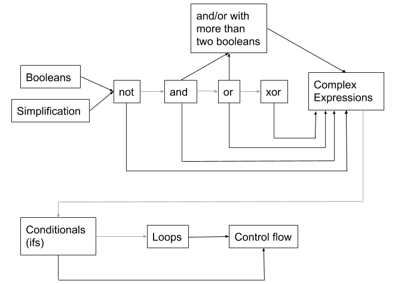

jsspiegel nmclean Learning Content
The purpose of this exercise is to define the learning content in your game.
You need to choose what subject you are going to teach (mathematics, programming,
history, ethics, finance, etc.), what age group you are targeting, and what
specific aspects of that subject you are going to tackle. You need to show that
you understand the educational aspects of this course, especially learning
trajectories and the gradual, stairstep nature of teaching / learning a
subject.
You are going to present a design that is more complete than what you are going
to be expected to implement. For your design, imaging that you have a full
design and implementation team, so implementation time is not a constraint.
You will later carve out a subset of this design to complete for this course.
Keep in all the html. Place in your design directory of your repository.
You and your partner fill in your CNETIDs - you only need to submit to one of your
svn repositories.
Summarize your content area in 1-2 paragraphs.
We wanted to teach logic through our game in a more fun, interactive way than logic is usually taught. Since logical thinking is usually introduced alongside proofs or basic programming, neither of which are covered until late high school at best, students are already well-conditioned to either dismiss it or latch on. By this period of development, a mathphobic student would have already acquired the anxiety that pushes them away from math and therefore logic (since the two are usually taught closely). We hope that by introducing fundamental logic earlier and through an active-learning lens, students can feel less intimidated by logic.
Since we want to start early in the learning process, we chose logical expression and boolean operators to be our topic. Throughout our game, we hope to introduce the basic logical operators (and, or, xor, not) and, through scaffolding, teach them to deconstruct large logical expressions to true, false, or possibly a single variable. While this content is the foundation for our game, we are also considering expanding to the topic of evaluating the control flow of a program.
Describe the age of your user and the skills that you assume the user already has
(that is relevant to your content). Your user must be in at least 3rd grade.
We are intending for this game to be for players in approximately sixth grade. The content taught in this game (boolean logic) is typically not learned until high school or even early college, but we believe this is due to a lack of CS education until that time, as boolean logic is typically only taught in that setting. The concepts themselves are actually quite simple to learn, and we believe that sixth graders are more than capable of learning and mastering them. We are assuming that the user already understands the concept of “true” and “false,” as these are common concepts beyond CS, and crucial to learning and understanding boolean expressions. The other concept that we assume sixth graders will have knowledge of is simplification of small expressions. This concept should be familiar by sixth grade due to its use in math.
Describe what skills you are going to teach your user.
In this game we hope to teach the user what various boolean logic expressions mean, and how to simplify complex boolean expressions to true or false. If it’s not too complicated, we may introduce short-circuit logic (true OR x = true).
Diagram a learning trajectory for this subject that starts with existing relevant
skills on the left-most side and progresses through knowledge they would learn
in a game like yours (your game won't need to cover all of this).

Describe your sources and methodology for creating your learning trajectory. It
cannot be just made up yourself - you need to draw upon existing examples or
justify the reasons why you have created it in that way.
Finnish Education Research: Researchers in Finland explored how teachers attempted and planned to introduce computational thinking in K-12 classes. The teachers mentioned many different possible areas of focus but a clear standout was the requirement of logical thinking (even a mention of truth tables) as a building block of CT in students.
Princeton Boolean Logic Curriculum:
This gives insight into what order to teach boolean expressions in, and also gave us the idea for ands/ors with more than two variables).